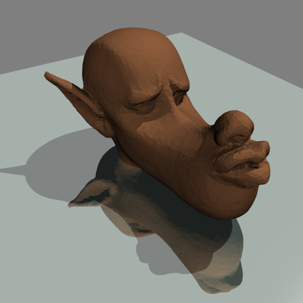
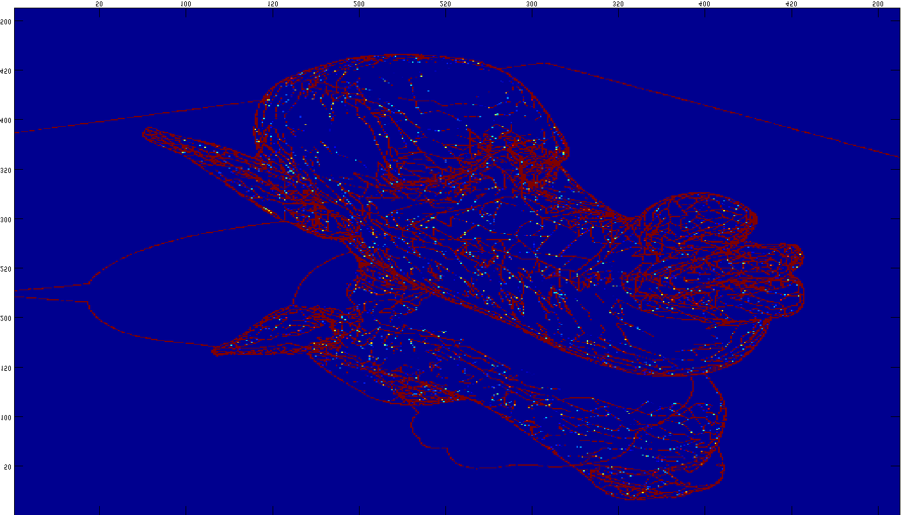
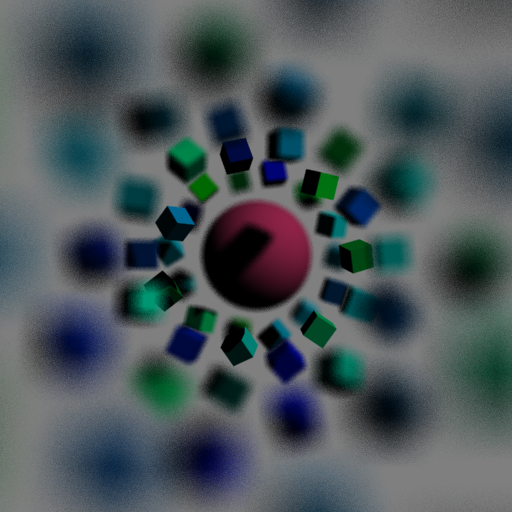
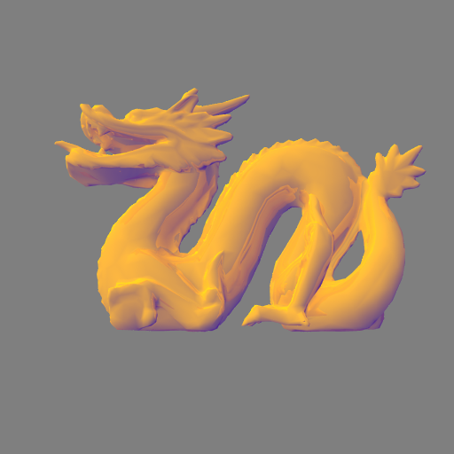
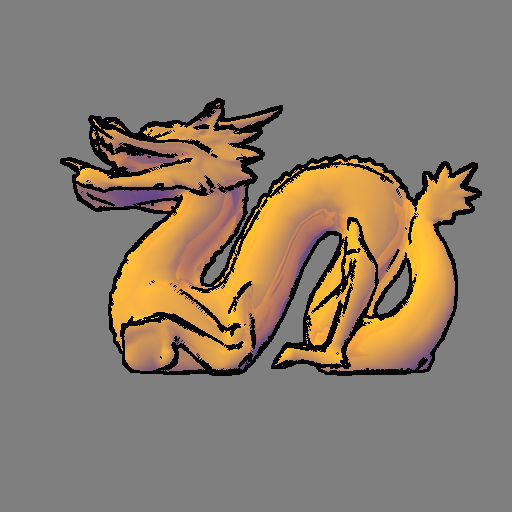
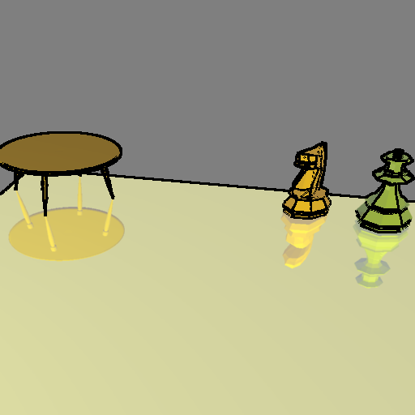
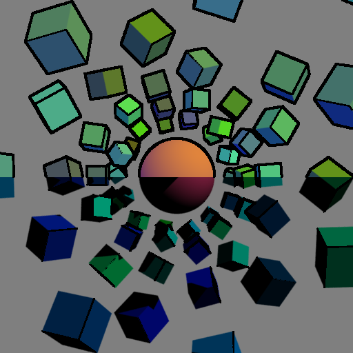
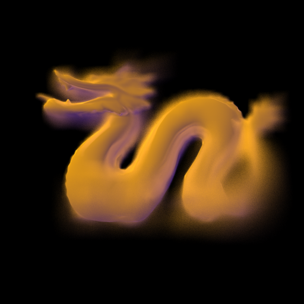
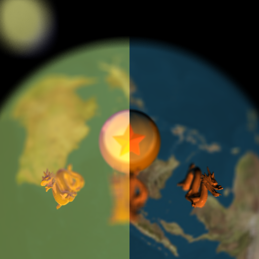

Ray Tracing the Real and the Unreal
The Composition of Photo Realistic and Non-Photo Realistic Effects
By Aashish Sheshadri and Ivan Opropeza
GalleryRendering beautiful images efficiently is the goal of computer graphics. While most users consider realistic images to be beautiful, we will consider beautiful images differently. One of the characteristics of art is the exploration of expression. For example, dipole paintings are portraits where two conflicting objects are juxtaposed in a composition to create meaning. Moreover, this technique often yields interesting pieces of art. Inspired by this technique, we explore the use of two conflicting concepts: photo and non-photo realism. We are interested in enhancing our current ray tracing to allow the creation of dipoles-like images.
List of Accomplishments:
- Adaptive Sampling
- Texture Mapping
- Bump Mapping
- Depth of Field
- A non-photo realistic illumination model
- Edge rendering algorithm
Speed Enhancements
Adapting sampling
One of the inherent limitations in computer graphics is the discretized image plane. This limitation is the cause of jagged edges in any image. One technique commonly used to alleviate this problem is sampling. In ray tracing, sampling can be accomplished by tracing multiple rays which originate from the neighborhood of the desired pixel location. The returned values are then averaged and the result is used as the color of the pixel. However, there are many circumstances when such expensive technique will not be beneficial. For example, when rendering a plain surface sampling will only smooth the edges but the quality of the image will not improve overall due to the low variance of in color. Thus, we should avoid the sampling overhead in similar situations. In our ray tracer, we first sample min(sample_size^2, 10) rays. Then, if the variance in color is below a threshold, we stop sampling and return the current average.
|  |  |
Photo Realistic Effects
Texture & Bump Mapping
In order to render realistic objects, one must be capable of accurately depicting the objects' intricate characteristics. The first step to achieve this effect is to seamlessly wrap images of such features to the representing polyhedron. For simple polyhedrons and spheres, we can use mathematical formulas to map a point in the three dimensional surface to a point (U,V) in a two dimensional plane. The UV coordinate is then used to access the color in the texture image and returns it as the color of the surface. For more complex models, we use trimeshes and the barycentric coordinates of the intersection are used to derive the UV coordinates.
Texture mapping provides a way to display intricate details, however, renditions have this wrapping appearance. This is because the lighting on the surface is unaffected by the object's "texture" resulting in limited realism. We can build upon the previous technique by incorporating an image that details how the elevation changes. The goal is to perturb the directional lighting based on the change of the object's texture at the point of intersection. When a ray hits the surface, we approximate the gradient at the intersection point using the UV coordinates as indecies for the bump map. We use the gradient to perturb the normal of the surface and the new normal is then used in the calculations of the illumination model.
 |
|


Depth of Field
While the latter techniques give more realistic renditions, there are effects that occur in real life that we are interested in. Depth of field (DoF) is one of them. DoF is an effect seen in physical cameras which use a lens to focus rays, since a pin hole camera with an infinitesimally small aperture can only be realized within the graphics realm. Due to the curvature of the lens, there exists a focus plane such that all the rays that go through the lens converge[1]. This results in sharp appearance of objects that are near the focus plane P. However, as an object moves away from such plane, P, the clarity of the rendered object diminishes. The effect is stronger as the diameter of the lens increases. This phenomena occurs because the rays are refracted in different directions and thus miss the "target" object. In order to implement such an effect, we are given a distance value. We use it along with the direction of the camera to locate P. Then, for each pixel, X, being drawn we derive Y, the point of intersection of the camera through X vector and P. Next, we sample points in the plane of the camera within the circle of confusion. For each sampled point Z, we trace a ray in the direction of the vector Y - Z. The returned values are then averaged to represent the color of the pixel.
 |
 |
Non-photo Realistic Effects
Illumination Model
In the literature of graphics, it is mentioned that there are four distinguishing characteristics which describe non-photo realism: the use of edges, the use of warmness and coolness to complement the illusion of depth, lack of shadowing, and anisotropic renditions of metal objects [2]. Since edges are black, their presence limits the range of colors the illumination model can render because dark colors can eventually blur them. The use of edges is further explained in the next section. In art theory, colors are associated with temperature: warm and cool. Red, orange, and yellow are warm while blue, green, and purple are cool. Cool colors tend to reside to the background in the presence of warm colors and vice versa [2]. Thus, the proposed illumination model uses two different color schemes to create the illusion of depth. Complement-based (darkening by adding the complement) tones and normal shading (darkening by adding black) tones. However, to avoid over saturation of color in images only a fraction of the diffused coloring is used in the final rendition. For the same reason of limited shading in the illumination model, shadowing is non-existant in non-photo realism. Finally, due to time constraints we were not able to approach anisotropicity the challenge but we can attempt to simulate such effects using appropriate textures.
|  |
Edge Drawing
Edges provide viewers depth cues when viewing visual data. Information about silhouettes and discontinuities can easily be rendered using free form shapes made by well selected lines [3]. In order to generate edges we implemented three heuristics. If for a pixel X there exists a pixel Y in its neighborhood with a depth above a predetermined threshold, the discontinuity in the 3d world can be explained by the existence of an edge. The second heuristic is based on discontinuities in the variance of view angles which are measured with respect to the surface normals in the local neighborhood of a pixel, the likely existence of a high variance is the presence of an edge. The final heuristic is that of the view angle approaching 90 degrees indicating an edge as described by the view perspective. We paint pixels black to indicate edges by varying thresholds and weights of the three described heuristics.
 |
 |
The mix
While it is difficult to create impressive images using the realistic and non-realistic effects, most of the images we now present have interesting compositions for the same reason.
 |
A composition focused on photo realistic effects. |
|  | A composition focused on non-photo realistic effects. |
|  | A composition focused on edges in realistic objects. This illustration also exemplifies the problems of edges in realistic renditions. |
|  | A composition focused on depth of field and the new illumination model. A nice effect is created when the cool shadows mix with the warm highlights in the out of focused areas. |
|  | A composition using all the techniques. |
References
- [1] Robert L. Cook, Thomas Porter, and Loren Carpenter. 1984. Distributed ray tracing.SIGGRAPH Comput. Graph.18, 3 (January 1984), 137-145.
- [2] Amy Gooch, Bruce Gooch, Peter Shirley, and Elaine Cohen. 1998. A non-photorealistic lighting model for automatic technical illustration. In Proceedings of the 25th annual conference on Computer graphics and interactive techniques (SIGGRAPH '98). ACM, New York, NY, USA, 447-452.
- [3] Michael A. Kowalski, Lee Markosian, J. D. Northrup, Lubomir Bourdev, Ronen Barzel, Loring S. Holden, and John F. Hughes. 1999. Art-based rendering of fur, grass, and trees. In Proceedings of the 26th annual conference on Computer graphics and interactive techniques (SIGGRAPH '99). ACM Press/Addison-Wesley Publishing Co., New York, NY, USA, 433-438.